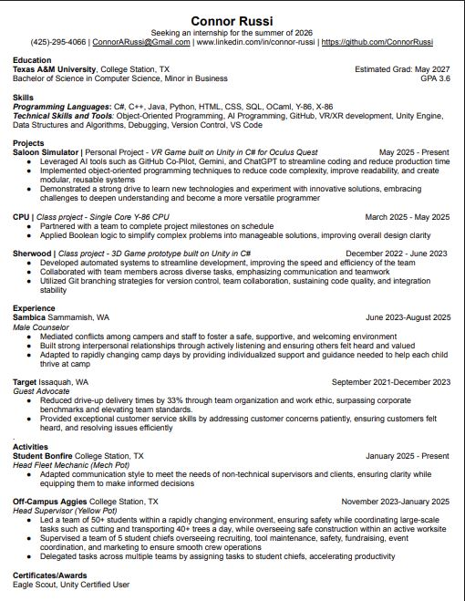

Resume
below is a link to download my resume in PDF format. It includes my education, experience, skills, and projects. Please feel free to reach out if you have any questions or would like to discuss potential opportunities.
Skills
Programming Languages
C#, C++, Java, Python, HTML, SQL, OCaml Y-86, X-86Technical Skills and Tools
Object-Oriented Programming, AI Programming, GitHub, VR/XR development, Unity Engine, Data Structures and Algorithms, Debugging, Version ControlTechnical Areas of Interest
I am particuarly interested in Object-Oriented Programming. I think it is super faciniating and interesting to understand how it works and how one could better utilize it to create better software. I have used OOP in class previouslt and in personally projects unintentionally and have been impressed with how well it works when I use it intentionally. I am very interested in AI-driven coding and the strengths and weaknesses of AI. I think it is impressive and very intersting to understand how AI works and AI's strengths and weaknesses.